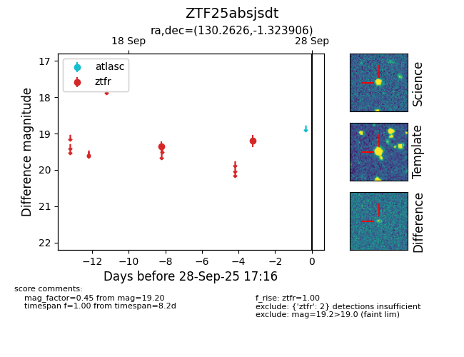

FINK: ZTF25absjsdt
Lasair: ZTF25absjsdt
ALeRCE: ZTF25absjsdt
ZTF25absjsdt (ztf,fink)
equatorial (ra, dec) = (130.2626,-1.32391)
galactic (l, b) = (227.4825,+23.51385)

last ztfr=19.20
2 ztfr detections